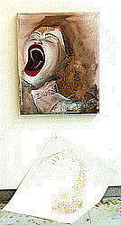

|  |  |  |  |  |
|
 click here to view larger image |
 |
Shed Skin oil paint, 2 cotton canvases, 2 linoleum prints 80 x 50 cm 2001 collection Gail Whiteman The gold linoleum print both appears in the painting and in the 'after image,' which has decorative elements of the hair, hints of the eye, a line of the face, but the "scream" is gone. This 'after image' was the jumping off point for the glow-in-the-dark paint 'after images.' This painting came after the A Color and a Field painting. So I still had ideas of 'decorated grief' in my head. I'd also just seen a Francis Bacon exhibit in The Hague. I'm sure I was influenced by his Screaming Pope, which I love. |
| I usually exhibited this painting close to the floor with the 'after image' half-way on the floor. |